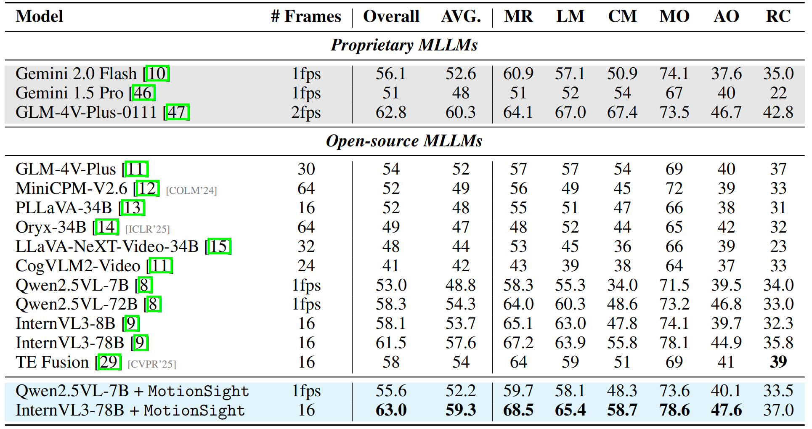
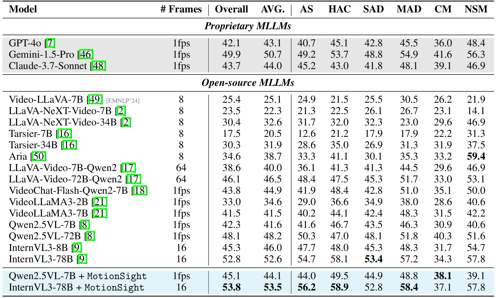

Main Results compared with SoTA Multi-modal Language Models

Quantitative results on MotionBench

Quantitative results on FAVOR-Bench
TL;DR: MotionSight: A zero-shot method and dataset (MotionVid-QA) for fine-grained video motion understanding with MLLMs.
Despite advancements in Multimodal Large Language Models (MLLMs), their proficiency in fine-grained video motion understanding remains critically limited. They often lack inter-frame differencing and tend to average or ignore subtle visual cues. Furthermore, while visual prompting has shown potential in static images, its application to video's temporal complexities, particularly for fine-grained motion understanding, remains largely unexplored. We investigate whether inherent capability can be unlocked and boost MLLMs' motion perception and enable distinct visual signatures tailored to decouple object and camera motion cues. In this study, we introduce MotionSight, a novel zero-shot method pioneering object-centric visual spotlight and motion blur as visual prompts to effectively improve fine-grained motion understanding without training. To convert this into valuable data assets, we curated MotionVid-QA, the first large-scale dataset for fine-grained video motion understanding, with hierarchical annotations including SFT and preference data, Θ(40K) video clips and Θ(87K) QAs. Experiments show MotionSight achieves state-of-the-art open-source performance and competitiveness with commercial models. In particular, for fine-grained motion understanding we present a novel zero-shot technique and a large-scale, high-quality dataset. All the code and annotations will be publicly available.
Illustration of the challenges in fine-grained motion understanding.
Our dedicated MotionSight pipeline for fine-grained motion understanding.

Statistical analysis of the MotionVid-QA dataset.
Fine-grained motion understanding by MotionSight
Quantitative results on MotionBench
Quantitative results on FAVOR-Bench
@article{du2025motionsight,
title={MotionSight: Boosting Fine-Grained Motion Understanding in Multimodal LLMs},
author={Du, Yipeng and Fan, Tiehan and Nan, Kepan and Xie, Rui and Zhou, Penghao and Li, Xiang and Yang, Jian and Yang, Zhengheng and Tai, Ying},
year={2025}
}